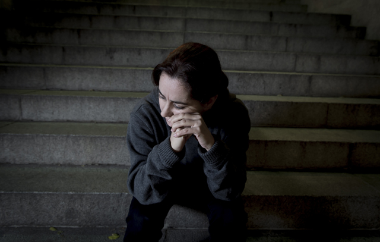
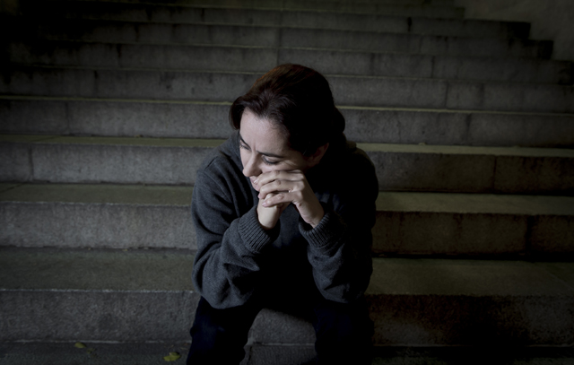

Your family doctor is ussually the first person to approach in relation to mental health concerns. Many people go to their family doctor(GP) with mental health problems such as depression or anxiety. In some cases, the GP may refer the person to a mental health professional such as a psychiatrist, clinical psychologist or addiction counsellor. In an emergency situation, when your GP is not available, you can contact a GP out-of-hours service or access the mental health services through your local mental health unit or hospital. The mental health service has changed considerably over the last twenty years or so. This has resulted in the development of better care and a more supportive service to individuals with mental illness. The Expert Group on Mental Health Policy produced the 2006 report A Vision for Change to provide a ten-year policy framework for Government. Health services at your Local Health Office The Health Service Executive (HSE) provides a range of community-based mental health services. The mental health team normally includes a consultant psychiatrist, registrar in psychiatry, and nurses. In many areas, the services of an addiction counsellor, psychologist, social worker and occupational therapist are available. When you are referred to a psychiatrist An out-patient appointment will usually occur within a few weeks of referral or, in an emergency, an immediate appointment may be arranged. The psychiatrist will meet with you to discuss your mental health problems and to explain the treatment options available, which may include a course of medication. Treatment options Treatment options include out-patient care: out-patient clinics (clients referred by GPs), day hospitals, day centres, home visits from the mental health team, referral to clinical psychological services, referral to addiction counselling services, access to social work or occupational therapy services and referral back to your GP for continuous care. In-patient care, normally of short duration, is provided when a person is admitted to a psychiatric unit in hospital. Out-patient and community services The aim of out-patient and community services is to treat and support individuals in their own homes and communities where possible. Family doctors (GPs) are central to the delivery of community care services.
This is a clinic that people attend for an assessment or for follow-up or continuing management of their mental illness. These facilities are often based in community health centres and are staffed by a consultant psychiatrist, community psychiatric nurses and other members of the mental health team, as required. A consultant psychiatrist leads the psychiatric team. This psychiatrist will be responsible for the treatment of the person whether in the community or in hospital.
Read MoreThis is a day facility where people with mental illness can attend from their home or care setting for an assessment, treatment or nursing care. It is usually seen as an alternative for someone who would otherwise require hospital admission. It is for people who are mentally unwell but who can also be cared for in their homes, for a period of time, without needing a hospital admission. The consultant psychiatrist who sees the person in the out-patient clinic will usually treat them in the day hospital also.
Read MoreThis is a community setting where people attend voluntarily from their home or care setting for continuing support. It is staffed by psychiatric nurses and, occasionally, occupational therapists. The aim is to provide a friendly and supportive environment with activities suited to the needs of each individual. It is not unusual for some people to attend a day centre for a long period of time. For others, a short period is all that is required.
Read MoreThis is a community facility where the emphasis is on people with mental illness working in areas suited to their skills or needs with support and guidance from trained staff.
Read MoreThis is an area of the hospital where patients are cared for on admission for treatment and assessment of their presenting problem. After treatment, the vast majority of patients will be discharged home and follow-up care is provided by the out-patients clinic or day hospital. However, some patients may be transferred from an admission unit to a continuing care ward, a rehabilitation ward or a care of the elderly ward, according to their needs.
Read MoreThis is an in-patient facility for the assessment of particular skills by trained staff. There is an emphasis on improving social skills and concentrating on other essential skills.
Read MoreThis is an in-patient facility that provides care for patients who often have long-term enduring mental illness. A small percentage will be discharged to another facility such as a residential unit. This unit may be used as a respite area for those patients in the community who need it.
Read MoreThis is an in-patient facility where the emphasis of care is on re-skilling patients with everyday living skills. This is done in order to improve their quality of life and help them regain a level of independence that will enable them to live in their homes or a residential facility.
Read MoreSometimes it may be necessary to care for and treat a patient in a safe and restricted environment due to the nature of their mental illness. This is usually a small unit within a hospital setting staffed by highly trained psychiatric nurses. The unit is locked and the environment is secure. Patients who, because of their mental illness, have disturbed behaviour that does not respond to treatment may require an admission to a secure unit.
Read MoreThis is a specialised unit for the 24-hour care and treatment of patients, usually those over 60 years of age, who have a mental illness or associated problems. The environment is designed to meet the needs of the elderly.
Read More